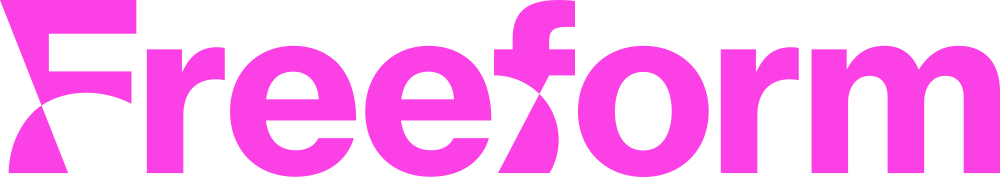
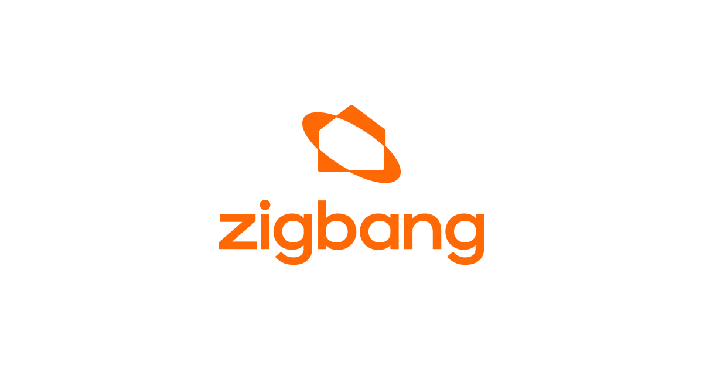
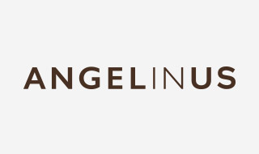
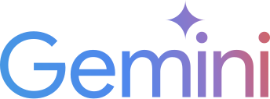
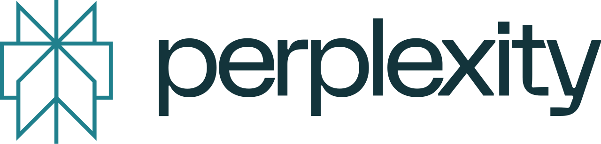

AtlasMagazine
No.032026년 11월호브랜드 아틀라스가 만드는 브랜드 읽기
Collins가 그린 여덟 곳
업종이 다른 여덟 브랜드를 Collins라는 한 스튜디오가 맡았다. 되풀이되는 방식과 매번 달라지는 선택을 나란히 놓는다.
기사 읽기


In this issue이번 호
업종이 다른 여덟 브랜드를 Collins라는 한 스튜디오가 맡았다. 되풀이되는 방식과 매번 달라지는 선택을 나란히 놓는다.
02디지털 서비스화면 안에서 짓는 신뢰영상 인프라에서 부동산, 금융, 게임, 뮤직비디오까지 디지털 서비스 일곱 곳을 나란히 읽었다. 각자 무엇과 무엇 사이의 거리를 줄였는지가 브랜드의 얼굴이 됐다.


 03부동산·건설이름이 값이 되는 곳
03부동산·건설이름이 값이 되는 곳래미안에서 자이까지 아파트 브랜드를 앞세운 건설사 여섯 곳과 미국의 임대 아파트 투자 회사를 나란히 읽는다. 짓는 일과 쥐는 일의 차이가 드러난다.


- 간판을 고쳐 쓴 가게들
- 간판을 내린 여섯 브랜드
Back issues지난 호
No.022026년 10월호기사 5편
커피 체인은 가격과 메뉴, 공간과 색으로 서로 다른 일상을 설계한다. 여덟 브랜드의 선택을 나란히 살폈다.



 금융은행은 무엇을 지키는가
금융은행은 무엇을 지키는가은행의 정체성은 소유 구조와 고객 선택에서 갈린다. 여덟 브랜드의 역사와 표식을 나란히 살핀다.


 패스트푸드빠른 한 끼의 여러 문법
패스트푸드빠른 한 끼의 여러 문법패스트푸드는 같은 속도 안에서도 서로 다른 선택을 설계한다. 여덟 브랜드의 메뉴와 매장, 성장 방식을 나란히 살폈다.


 아이덴티티jkr의 서로 다른 얼굴
아이덴티티jkr의 서로 다른 얼굴jkr는 로고보다 브랜드가 움직이는 방식을 설계한다. 유산과 제품, 데이터에 따라 그 문법은 달라진다.


 디자인펜타그램이 다시 그린 심볼들
디자인펜타그램이 다시 그린 심볼들여덟 브랜드가 같은 스튜디오를 거치며 남긴 흔적을 비교한다. 형태를 단순화하는 방식은 같지만 그 결과가 향하는 곳은 브랜드마다 다르다.


No.012026년 9월호기사 5편
파랑과 보라의 그러데이션이 AI의 기본값처럼 굳어지는 동안, 몇몇 회사는 울새와 말, 세포와 별표를 골랐다. 새 옷을 입은 AI 브랜드 아홉 곳을 나란히 놓고 읽는다.



 스튜디오로고 뒤에서 일한 사람들
스튜디오로고 뒤에서 일한 사람들울프 올린스가 트럭 기사를 인터뷰하던 1967년부터 랜도가 타파웨어의 뚜껑을 그린 2024년까지. 다섯 스튜디오의 작업으로 리브랜딩이라는 일이 어떻게 달라져 왔는지 따라간다.


 이름간판을 바꾼 날
이름간판을 바꾼 날시계 무브먼트의 이름이 회사 이름이 되고, 금성사가 LG가 되고, 페이스북이 메타가 됐다. 회사는 언제 자기 이름을 버리는가. 사명을 바꾼 열여섯 곳의 기록을 세 갈래로 나눠 읽는다.


 연대기처음에는 무엇을 팔았나
연대기처음에는 무엇을 팔았나화약, 양초, 볼트, 전신기, 화물. 1800년대 전반에 문을 연 회사 열한 곳의 첫 상품을 지금 하는 일과 나란히 놓았다. 오래 살아남은 것은 제품이 아니었다.


 색빨강의 세기, 형광 연두의 십 년
색빨강의 세기, 형광 연두의 십 년색상값이 기록된 아이덴티티 236건을 연대순으로 늘어놓았다. 20세기 작업 20건 가운데 15건에 빨강이 있었고 2020년 이후 작업에서는 형광 연두가 15번 나타났다.


아틀라스 매거진은
브랜드 아틀라스의 브랜드 항목을 가로질러 읽는 기획 지면입니다. 한 브랜드의 사전 항목으로는 보이지 않는 흐름을 여러 브랜드를 나란히 놓고 봅니다. 누가 그렸는지, 왜 이름을 바꿨는지, 어떤 색을 골랐는지 같은 것들입니다. 사실은 수록된 브랜드 항목에 기록된 것만 씁니다.